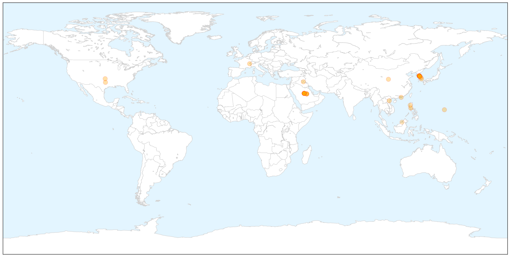
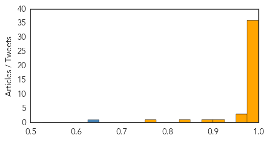
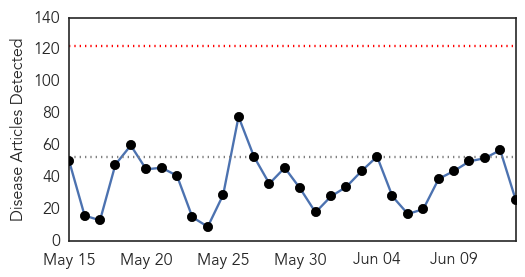

MERS
30-Day Web Trend
23 alerts, 2 warnings

30-Day Twitter Trend
6 alerts, 0 warnings

Article Locations

X

Article Confidences
Top Articles:
- 1.000
- Explainer: A MERS outbreak has killed 14 in South Korea. What are the experts saying?
- 1.000
- A MERS outbreak has killed 14 in South Korea. What are the experts saying?
- 1.000
- Embassy in Saudi says Pinoy has MERS virus
- 1.000
- Modern Healthcare Modern Healthcare business news, research, data and events
- 1.000
- Mers virus kills 14 in South Korea
- 1.000
- Another OFW gets deadly MERS virus
- 1.000
- 2 South Korean hospitals shut over MERS fears; 13th person dies
- 1.000
- WHO Experts Downplay MERS Threat In South Korea As Death Toll Rises To 14
- 0.999
- 7 New MERS Cases Raise S. Korea's Total to 145
- 0.998
- Kingdom, South Korea see no MERS letup
- 0.998
- WHO calls emergency meeting on "large, complex" S. Korea MERS outbreak
- 0.998
- WHO says South Korea’s MERS outbreak large and complex
- 0.998
- WHO calls emergency meeting on "large, complex" South Korea MERS outbreak
- 0.998
- WHO recommends continuation of strong disease control
- 0.998
- S. Korea, WHO experts downplay pandemic potential of MERS
- 0.998
- South Korea can expect more cases says WHO
- 0.998
- Governor's office acts to dispel rumors of MERS on Guam
- 0.998
- WHO calls emergency meeting on "large, complex" S. Korea MERS outbreak
- 0.998
- WHO Says South Korea's MERS Outbreak Large And Complex
- 0.997
- South Korea’s MERS outbreak should be wake-up call for world: WHO expert
- 0.997
- South Korea MERS Outbreak 2015, Death Toll & News Updates
- 0.997
- WHO calls meeting on Korea’s Mers outbreak
- 0.997
- World Health Organization calls emergency meeting on ‘large, complex’ South Korea MERS outbreak
- 0.997
- WHO Says MERS Spread Slowing as South Korea Reports 14th Death
- 0.997
- U.S. hospitals warned to be on lookout for MERS cases
- 0.996
- (6th LD) WHO says MERS in S. Korea 'large and complex'
- 0.996
- FUKUDA : WHO: South Korea's MERS Outbreak Large and Complex
- 0.994
- WHO calls emergency meeting on 'large, complex' South Korea MERS outbreak
- 0.994
- S Korea seals off two MERS hospitals
- 0.992
- Phuket on alert for MERS virus
- 0.991
- (5th LD) WHO says MERS in S. Korea 'large and complex'
- 0.987
- Civil Aviation Administration ...｜Society｜WCT
- 0.986
- SKorea cuts key rate as MERS emerges as threat to recovery
- 0.984
- Man hospitalized in Slovakia with suspected case of MERS
- 0.984
- OFW in Saudi Arabia tests positive for Mers
- 0.975
- MERS threat widens in South Korea
- 0.971
- SGGP English Edition- Korean man dropping dead tests negative for MERS
- 0.970
- Hospitals in Phl unprepared for possible outbreak
- 0.959
- Pinoy tests positive for MERS-CoV in Saudi
- 0.901
- SIA to waive cancellation fees for passengers with tickets to, from Korea
- 0.885
- Riyadh, Seoul to cooperate on fighting MERS virus
- 0.840
- Bratislava hospital tests South Korean man in suspected MERS case
- 0.766
- Police tracking down MERS suspect who checked out from Miri Hospital – BorneoPost Online
Top Tweets:
- 0.635
- RT: S. Korea - Coronavirus MERS Case List - 138 cases 14 deaths 11 health care workers https://t.co/PSJ37aKD5e
Ebola
30-Day Web Trend
0 alerts, 0 warnings

30-Day Twitter Trend
0 alerts, 0 warnings

Article Locations


Article Confidences

Top Articles:
- 1.000
- MERS virus spreads: Why it’s so difficult to fight
- 1.000
- MERS death toll climbs to 14, WHO anticipating more cases while outbreak loses steam
- 0.999
- Ebola could hit again and we would hardly do better -MSF
- 0.999
- Ebola's grip strengthens in Sierra Leone, Guinea
- 0.997
- Sierra Leone announces new curfew to halt Ebola
- 0.997
- Ebola could hit again and we would hardly do better - MSF
- 0.996
- Fighting MERS, again
- 0.996
- Ebola could hit again and we would hardly do better: MSF
- 0.996
- Ebola is on the rise again — and the world is no better prepared for it than last year
- 0.996
- Sierra Leone leader imposes curfew in bid to halt Ebola
- 0.992
- Guinea: IOM and CDC conduct Ebola Virus Disease outbreak assessment in Boke, Guinea
- 0.991
- Ebola Fears: Employer Best Practices for Epidemic Preparedness
- 0.991
- Sierra Leone enforces curfew as Ebola virus resurfaces in north west
- 0.990
- The Portland Press Herald / Maine Sunday Telegram
- 0.990
- Ebola nurse Will Pooley gets MBE
- 0.987
- Ebola Might Hit Again, We Remain Unprepared, Repeating Mistakes
- 0.972
- May Be, Ghanaians Are Ready For Mass Immunization Of An Ebola Vaccine That Was Never Tried On Humans
- 0.944
- Suffolk Ebola survivor Will Pooley awarded an MBE
- 0.940
- Monkeying Around With An Ebola Vaccine
- 0.939
- Indy native who beat Ebola wins prestigious award
- 0.850
- Sierra Leone: Sierra Leone announces new curfew to halt Ebola
- 0.819
- Monkeying Around With An Ebola Vaccine – Daily Guide Ghana
- 0.804
- South Korea MERS Crisis Witnesses Another Death but WHO Issues Positive Statements
- 0.800
- S/Leone: AU summit to consider report on Ebola crisis-Official
- 0.740
- UMN hospital to be regional treatment center for Ebola
- 0.687
- Ghanaians to Beware of the Governmental “Ebola Vaccine Trials”
Top Tweets:
- 0.760
- 11 clinical staff from Sierra Leone work alongside international staff to run Ebola treatment trial. Invaluable support. Capacity building.
- 0.687
- To date 61 brave & hard working doctors nurses pharmacists & coordinators from 14 countries have worked on our Ebola treatment trials.
- 0.644
- Are we beginning to witness low-level ongoing cases of Ebola such as may have been occurring for at least decades if not longer?
- 0.590
- Good point. @WHO always has a difficult balance to strike. 2009 pandemic deemed overreaction. Ebola deemed under-reaction.
- 0.508
- MGH selected as regional Ebola treatment center - Boston Globe http://t.co/2s9ZgkU8EV ebola EVD